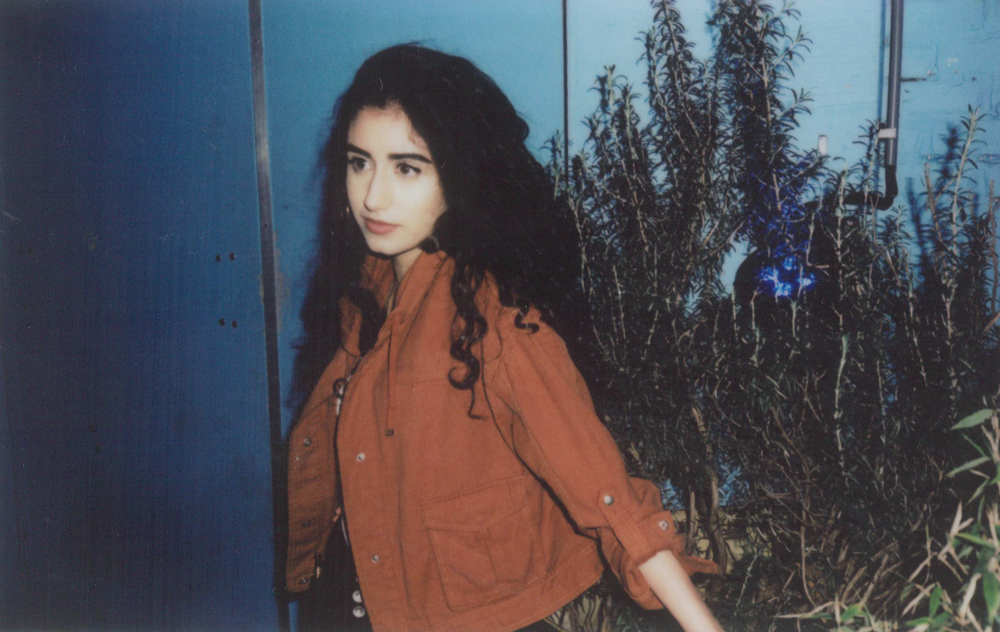
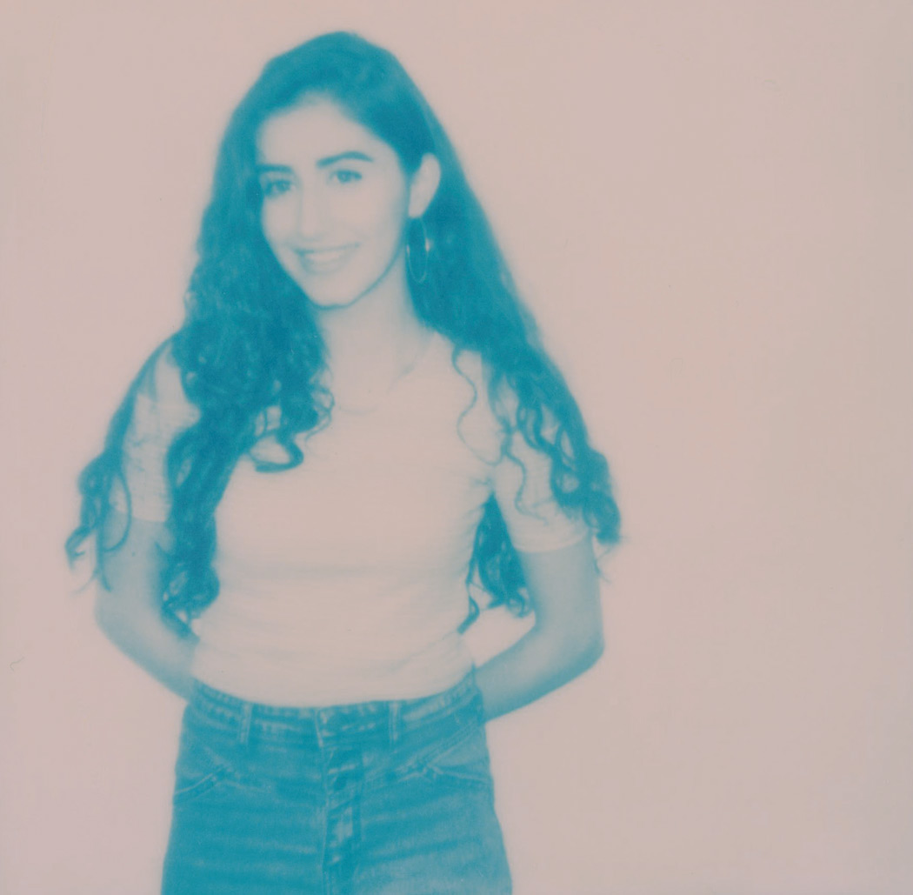
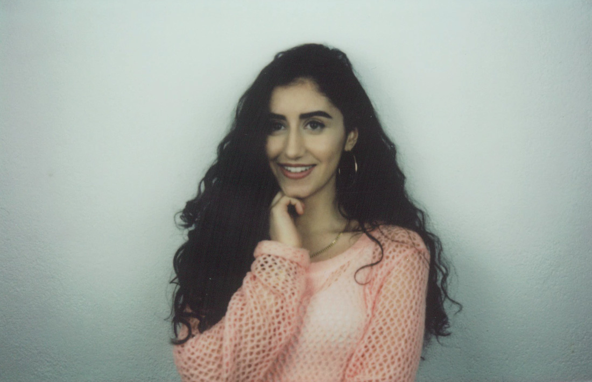

“There’s always people who want to feel more powerful than the rest, they’ll go into harmful extends to make that happen. Those emotions will always exist because they’re human, maybe if every child is always taught from early on to love and respect everyone? End of the day we all take our own lead mentally, you can’t control people and you shouldn’t.” So wise words by 18-year-old singer/songwriter and producer singer NAAZ from Holland, who has just released her first single and video “Words”, a track that convinces with a wonderful positive vibe. “I am in love with your words.” sings NAAZ for us, the words and sound arrive at the receiver like a darling smile. And we are in love with your song, NAAZ.
Have you always wanted to be a singer?
Actually I’ve always wanted to be a writer. As a kid I always wrote little booklets and poems. Eventually I started singing my poems, just like any other child that randomly sings about things they see and experience. Once I started doing that I realized I wanted to become an artist, one who sings and creates.
Who are your role models in music and in your private life?
I love Kanye West, he’s always been so innovative and confident with his opinions and decision making. I feel like those are such important traits to have as an artist. To know what you want and fully stand behind it, no matter what people or numbers say.
Let´s talk about your debut EP „Bits of Naaz“. When did you feel that it was ready and ready to be shown to the world. And how long did you work on it?
At first, I did a lot of studio sessions to create an EP. This worked out nicely, with great songs but the songs didn’t 100% feel like they were really who I am as an artist or even as a person. I was hearing this sound in my head, as if my soul was playing my identity to me, but had no idea how to explain it to other producers. In a November weekend I decided to try to produce the sound myself, I ended up with the exact sound I love and wanted to do. ‘Words’ was born in that weekend too! I called my creative manager and asked him if we could throw away the old EP and start over. So we did and a few months later the ‘Bits Of Naaz’ EP had found its true bits! I bring most of my productions in general to my good friends at Soulsearchin’, and now we produce almost all my bedroom born ideas together. They really understand my vision which is a blessing. Not so strange since they kind of ‘raised’ me. I love them so much. They’re my best friends now.
“I feel like those are such important traits to have as an artist. To know what you want and fully stand behind it, no matter what people or numbers say.”
Your sound is soulful, fresh and warm, can you tell us about your influences? What artists and genres have helped you develop your own style?
A lot of my influences come from sounds you hear in everyday life. I want to show that you can create anything from thin air while having little to nothing of real gear to work with. For instance, I used the metal sounds of spoons drumming against teacups, combined with natural claps with hands in the song ‘Words’. The rest of the track is filled with these foley sounds as well along with very minimalistic production. You can clearly hear it’s made in a bedroom, and I feel like that can open a lot of mental doors. So many people think you need a studio, expensive gear or mad technic skills to make music. All you need is some inspiration and a little setup with a microphone really! Other than that I love to make my music euphoric and hopeful, there’s almost always some seventh and ninth chords in it for the good vibes. It’s definitely inspired by pop, R &B&indie music. Kind of a mix of all of those genres.
“If I love and am loved, that’s success to me. End of the day everything else revolves around self love and love in general as well right?”
How do your Kurdish roots affect you?
I wasn’t allowed much in the past, music was definitely a no go. It was very hard, I felt like I was pressured to be everything but who I am. After years of fighting for it, they finally support me. I’m so grateful for that, but now I notice that I’m extra careful with everything I do in everyday life &career. I try to keep my Kurdish morals alive, in hopes of inspiring other people and parents to allow their kids to chase their dreams too. My parents operated out of fear, they were afraid that I’d lose myself if I’d enter the music industry. I was already growing up within two different worlds. If I can show them that you can remain exactly who you are no matter what path you take, maybe that will open the eyes of other parents as well.
“A lot of my influences come from sounds you hear in everyday life. I want to show that you can create anything from thin air while having little to nothing of real gear to work with.”
How do you define success?
If I love and am loved, that’s success to me. End of the day everything else revolves around self love and love in general as well right?
In an interview with the Fader you explained about your video: “You see a bunch of people living in each other’s worlds, admiring one another, and expressing themselves. I strongly believe it’s possible for people to live in peace like that one day.” This has been a dream since humankind exists. Why do you think it somehow never happens and it´s like we make one step forward and two back? Also do you think that maybe it is just about accepting the existence of the good and the bad in human nature?
There’s always people who want to feel more powerful than the rest, they’ll go into harmful extends to make that happen. They don’t like to admire other people, they only want to be admired themselves. I feel like this often origins from insecurities, jealousy, anger etc. Those emotions will always exist because they’re human, maybe if every child is always taught from early on to love and respect everyone? End of the day we all take our own lead mentally, you can’t control people and you shouldn’t.. So yeah maybe it really is just about accepting the existence of the good and the bad in human nature. Maybe that’s the only way..
“I try to keep my Kurdish morals alive, in hopes of inspiring other people and parents to allow their kids to chase their dreams too.”
Where do we find you on a Saturday night?
Alone in my bedroom, making songs like a little hermit. I hope you’ll find me on stage on Saturday nights in the future, I did my first show the other day and now I genuinely think performing is already one of my favorite things to do in this world! Find me where ever the universe takes me :)
“So yeah maybe it really is just about accepting the existence of the good and the bad in human nature. Maybe that’s the only way.”